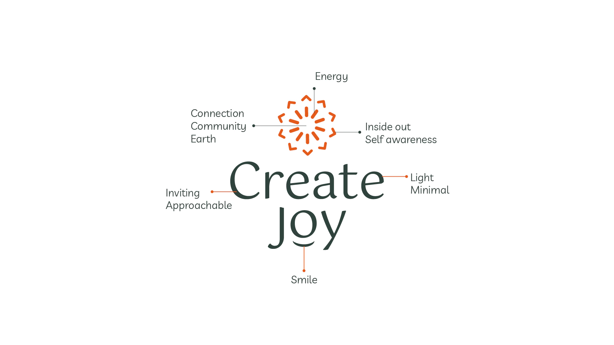
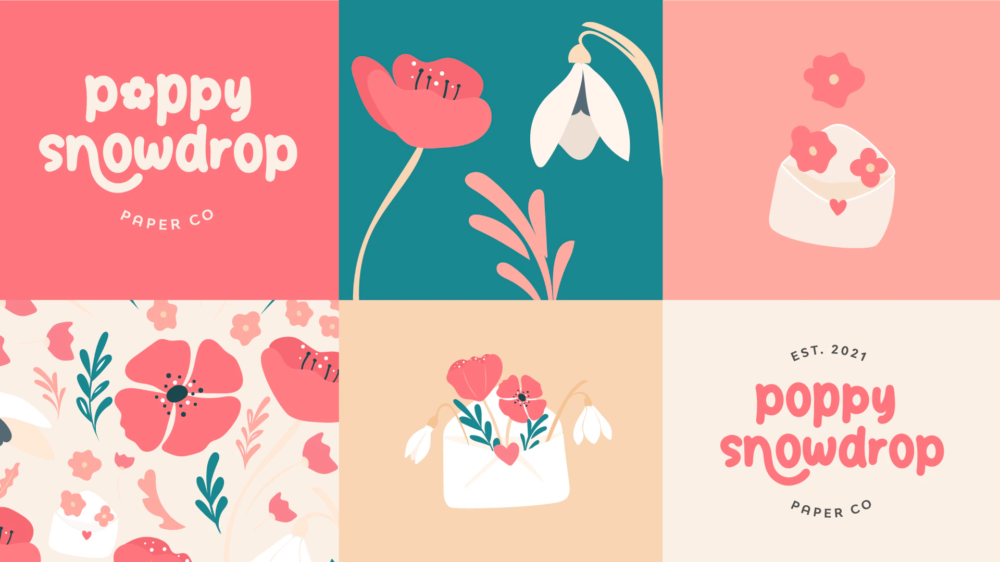

Diário de bordo Estratégia de marca
Não crie um logo antes de responder estas 5 perguntas
Quase todo mundo chega pedindo um logo. Mas antes dele vem a estratégia de marca: cinco perguntas sobre para quem é a sua marca, o que ela tem de diferente e para onde o seu negócio vai.

Quase toda primeira conversa aqui no estúdio começa do mesmo jeito: preciso de um logo. E a gente entende. O logo é a parte que dá para ver. Vai na fachada, na sacola, no perfil do Instagram. Parece que ele é a marca.
Só que um logo criado sem estratégia é como fazer a mala sem saber para onde você vai. Dá para colocar coisas lindas lá dentro. Você só vai descobrir se eram as certas quando já tiver desembarcado.
Afinal, o que é estratégia de marca?
Parece palavra de empresa grande, então vamos simplificar. Estratégia de marca é o conjunto de decisões que dá uma função para cada escolha visual. Antes de desenhar qualquer coisa, a gente quer respostas claras para cinco perguntas:
- Para quem é essa marca? Não é para todo mundo. É para aquela pessoa específica que se encanta quando encontra você.
- O que ela sente antes de te conhecer, e o que deveria sentir depois?
- Por que você? O que te diferencia das outras cinco abas que ela deixou abertas?
- Qual é a personalidade? Se a sua marca entrasse numa sala, como ela falaria, se vestiria e daria risada?
- Para onde o seu negócio está indo nos próximos três a cinco anos?
Quando essas respostas estão claras, o design deixa de ser uma questão de gosto. Cores, tipografia, formas, fotografia e palavras ganham uma direção, e cada escolha passa a ter um porquê.

Estratégia de marca num projeto de verdade
A história por trás da Poppy Snowdrop Paper Co tem muita tristeza e perda. Saber disso mudou o briefing por completo. A identidade tinha uma missão, e essa missão era levar alegria, acolhimento e autenticidade para algo que nasceu numa fase difícil. Por isso as flores ficaram divertidas, a paleta ficou generosa e todo o universo visual foi pensado para fazer as pessoas sorrirem.

Sem esse contexto, a gente poderia ter feito algo bonito. Com ele, a gente fez algo verdadeiro. Essa é a diferença que a estratégia faz: a tendência diz o que está na moda este ano, a estratégia diz o que é certo para você.
O custo silencioso de pular a estratégia
Pular a estratégia quase nunca parece um desastre no primeiro dia. Parece um monte de coisinhas que vão se acumulando:
- O logo fica lindo sozinho, mas nada parece combinar com ele.
- Cada post, cardápio ou panfleto novo vira uma discussão sobre cores e fontes.
- A marca fica parecida com todas as outras do seu nicho, porque foi feita a partir das referências do seu nicho.
- Um ano depois, já parece que está na hora de mudar tudo.
E essa última é a mais cara.
Ser boa não basta. É preciso parecer boa, e parecer você.
Como a gente traça o mapa na Buenas
A estratégia é a primeira parada de toda jornada de design de marca com a gente. Começa com um café virtual gratuito, em que a gente escuta a sua história, as suas clientes e os seus planos. E antes de existir qualquer logo, a gente apresenta conceitos e conversa junto com você sobre a direção visual, para a rota estar combinada antes de começar a desenhar.
Só depois disso a gente abre o caderno de desenho. E quando finalmente apresenta a identidade, consegue te explicar o porquê de cada curva, cor e palavra.
Sua primeira parada
Se você está criando uma marca, ou sente que a sua já não conta a verdade sobre o seu negócio, comece pelo mapa. Pegue as cinco perguntas lá de cima e um caderno, e responda, mesmo que as respostas saiam bagunçadas. Você vai se surpreender com o quanto o caminho fica mais claro.
E se quiser companhia na estrada, é exatamente para isso que a gente está aqui.